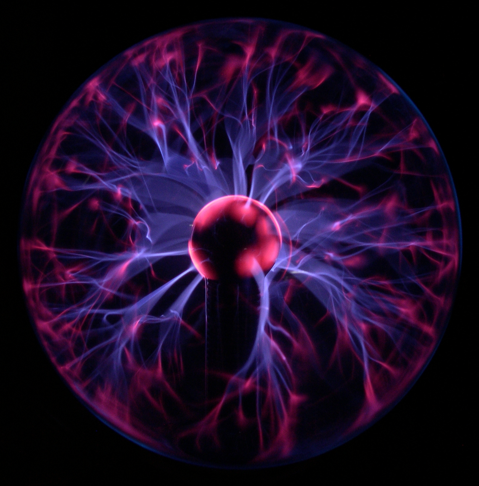
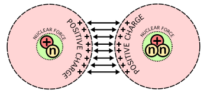

La fusión nuclear es el proceso por el cual varios núcleos atómicos de carga similar se unen y forman un núcleo más pesado. Simultáneamente se libera o absorbe una cantidad enorme de energía, que permite a la materia entrar en un estado plasmático. El plasma es un estado fluido de agregación de la materia similar al gaseoso, cuyos atómos cargados electricamente no estan en equilibrio electromagnetico. Para que pueda ocurrir la fusión debe superarse una importante barrera de energía producida por la fuerza electrostática. A grandes distancias, dos núcleos se repelen debido a la fuerza de repulsión electrostática entre sus protones, cargados positivamente. Sin embargo, si se pueden acercar dos núcleos lo suficiente, debido a la interacción nuclear fuerte, que en distancias cortas es mayor, se puede superar la repulsión electrostática.

